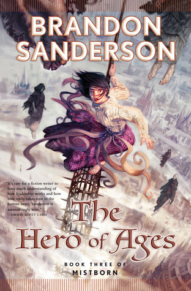

The Hero of Ages
⭐️⭐️⭐️⭐️⭐️
An excellent ending to this series. I didn't want it to end. Overall, I'm extremely impressed with the stories, worlds, and emotions that Brandon Sanderson is able to create and evoke. Fantasy: not as corny of a genre as you think.
- Previously: The Well of Ascension
- Next: A Clash of Kings